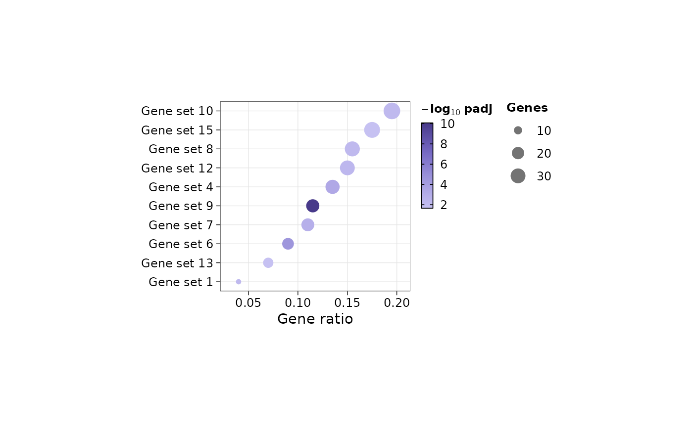
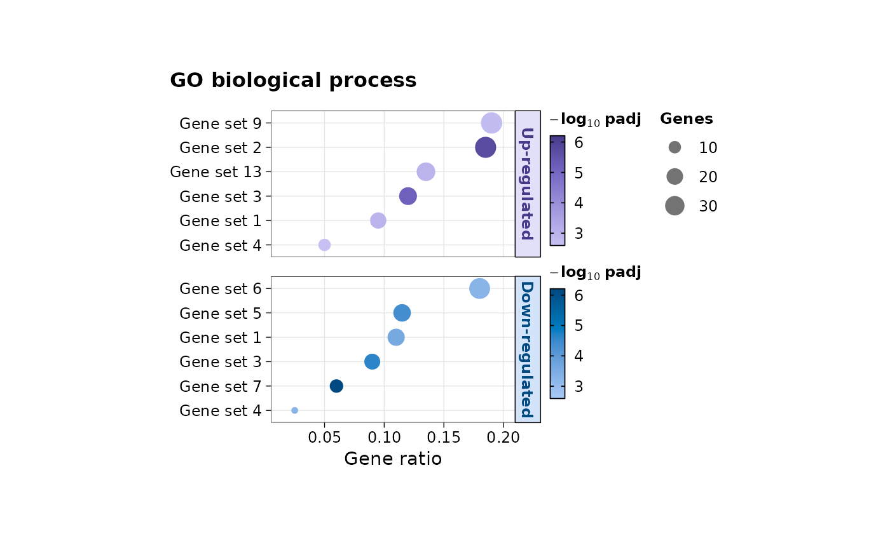

Dot plot of the top gene sets of enrichment results
Source:R/enrichment_plots.R
plot_enrichment_dots.RdShows the most significant gene sets of one enrichment result,
or of several side by side (e.g. the gene sets enriched in up-
and in down-regulated genes): the gene ratio (or NES) on the
x-axis, the number of genes as dot size and the -log10 adjusted
p-value as colour. Each result is a panel named by a strip and
drawn in its own single-hue palette, so that panels read apart
at a glance; panels are stacked (default), placed side by side,
or in a grid. Panels have a fixed size, so the figure combines
cleanly with others (e.g. two timepoints with
patchwork); save it with save_plot.
Usage
plot_enrichment_dots(
enrichment,
n = 10,
terms = NULL,
x = c("gene_ratio", "nes", "count", "padj"),
order.by = c("x", "padj"),
padj.cutoff = 0.05,
show.ns = FALSE,
term.replace = NULL,
wrap.width = 45,
cols = NULL,
shared.scale = TRUE,
ncol = NULL,
nrow = NULL,
title = NULL,
fill.title = NULL,
size.title = NULL,
cell.height = 0.2,
panel.width = 2,
legend.position = c("right", "bottom", "none"),
legend.layout = c("columns", "stacked"),
bg = "transparent",
...
)Arguments
- enrichment
One enrichment result (a table or a clusterProfiler result, see
standardize_enrichment), or a named list of them, one panel each, e.g. `list("Up-regulated" = ora_up, "Down-regulated" = ora_down)`. Standardized results with a `comparison` column give one panel per comparison- n
Number of gene sets per panel, the most significant first, default is 10
- terms
Gene sets to show instead of the top `n` (names after cleaning, or the original `term_id`s); each panel shows those it has. Default is NULL
- x
What the x-axis shows: "gene_ratio" (default; over-representation: genes of the set in the list / genes in the list, `k/n`; GSEA: leading-edge genes / genes in the set), "nes" (GSEA), "count" or "padj" (-log10 adjusted p-value)
- order.by
Order of the gene sets in a panel, from the top: "x" (default; largest x first) or "padj" (most significant first)
- padj.cutoff
Adjusted p-value below which a gene set is significant, default is 0.05
- show.ns
Whether non-significant gene sets may fill a panel that has fewer than `n` significant ones, default is FALSE
- term.replace
Replacements in gene set names, applied after cleaning: a named character vector of regular expressions and their replacements, e.g. `c("Extracellular matrix" = "ECM", "transforming growth factor beta" = "TGF-beta")`; Greek letters as Unicode escapes, e.g. "TGF\u03b2" for TGF-beta with the Greek letter. Default is NULL
- wrap.width
Gene set names are wrapped onto lines of at most this many characters, default is 45
- cols
Colours of the -log10 adjusted p-value: NULL (default) gives each panel its own single-hue palette, in the order "seq-purple", "seq-blue", "seq-green", "seq-orange", "seq-red", "seq-teal", "seq-magenta"; one palette name (or colours from low to high) for every panel; or palette names, one per panel (named by panel, or in panel order), or a list of colour vectors
Whether every panel uses the same colour and size limits (and x-axis range), default is TRUE, so that the same lightness and dot size mean the same value in every panel. Set FALSE to give each panel its own
- ncol, nrow
Layout of the panels. If both are NULL (default), panels are stacked in one column; `nrow = 1` places them side by side
- title
Title of the figure. Default is NULL
- fill.title, size.title
Titles of the colour and size legends. If NULL (default), "-log10 padj" and "Genes"
- cell.height
Height of a gene set's row in inches, default is 0.2 (rows of names wrapped onto several lines are taller)
- panel.width
Width of a panel in inches, default is 2
- legend.position
Position of the legends of each panel: "right" (default), "bottom" or "none"
- legend.layout
Arrangement of the legends on the right: "columns" (default; colour bars in one column and size legends in the next, each in panel order; a single panel's two legends side by side) or "stacked" (one column, each panel's colour bar and size legend in turn)
- bg
Background colour, default is "transparent"
- ...
Arguments to
standardize_enrichmentwhen `enrichment` is not standardized yet (e.g. `clean.terms`)
Value
A patchwork of one panel per result (a ggplot for a single
result); its source data (export_source_data) are the
plotted rows of the standardized table, with their `panel`
Details
Legends: each panel has its own colour bar (in its palette) when panels are drawn in different palettes; the size legend is drawn once when the limits are shared. With legends on the right (default), the legends of all panels are gathered to the right of the panels: colour bars in one column and size legends in the next (`legend.layout = "columns"`), or all in one column. Panels side by side (or in a grid) have the same height, so that their rows line up: shorter panels get empty rows at the bottom. Long names of stacked panels are wrapped to fit the height of their strip; all strips have the same thickness, with their names centred.
Gene ratio is a descriptive measure: a set of 10 genes with 5 in the list has a higher ratio than a set of 500 with 50, but is supported by fewer genes; read it with the dot size (count) and colour (significance).
Examples
set.seed(1)
ora <- function(k) {
d <- data.frame(Description = paste("gene set", 1:15), Count = k,
GeneRatio = paste0(k, "/200"), BgRatio = "100/20000",
pvalue = runif(15)^6)
d$p.adjust <- p.adjust(d$pvalue, "BH")
d
}
plot_enrichment_dots(ora(sample(5:40, 15)))

plot_enrichment_dots(list("Up-regulated" = ora(sample(5:40, 15)),
"Down-regulated" = ora(sample(5:40, 15))),
n = 6, title = "GO biological process")
